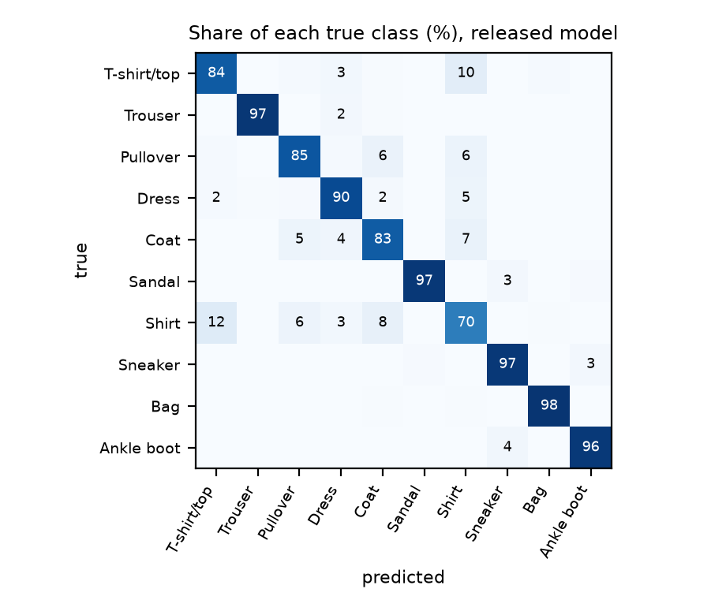
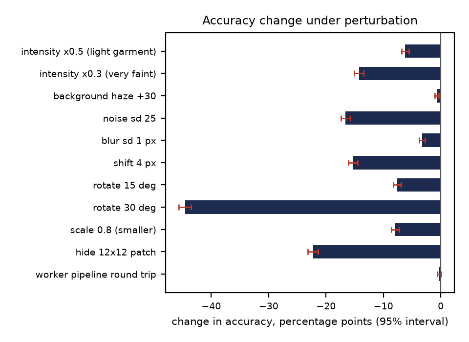

| To | Project owner and decision-maker for the Sparta pilot | Date | 15 November 2026 |
| From | ANCP Group M (deliverable D5, version 1) | Repository | tag d5-v1, folder submissions/D5 |
| Model | Photo-to-garment suggestion (FDD 14.3, LLD 7.7): a 25,706-weight network that names one of ten garment types from a 28 by 28 greyscale picture. Released file SHA-256 fcd2da1fdfc6701f… | ||
Decision asked. Keep the photo suggestion switched off for the pilot (GARMENT_GUESS_ENABLED=false) until the 100-photo team test of LLD 7.7 is done, as the model card already says. Nothing in this memo replaces that test.
Why. On the test it was built for, the model is sound and honestly measured: 89.5% accuracy (95% interval 88.9 to 90.1), against 84.2% for a plain logistic regression and 10.0% for guessing. No leakage was found. But that test uses clean studio pictures. Two weaknesses will matter on phone photos: footwear facing the other way is almost never recognised (ankle boot 0%, sneaker 32%, sandal 47% when mirrored) and accuracy drops 6 to 14 points for faint garments (intensity x0.5 to x0.3). Both are cheap to test on the team photos and the first is cheap to fix in training.
Recommended next steps (in order): (1) run the 100-photo team test with shoes photographed in both directions and some white garments, and read the threshold from the cost table in section 4; (2) before it, retrain as a new version with a left-right flip for footwear in the augmentation (one run takes about 6 minutes; the notebook re-scores it unchanged); (3) add a worker test that the colour-inversion step ran, since without it accuracy falls to 23%; (4) once the pilot runs, replace the assumed cost ratio c with the measured share of wrong suggestions users change.
Figure 1. How the data was split. Sources: model card, train.py, data README [2], notebook [3].
Why this avoids leakage. Three independent parts, cut once from the files Zalando published as training and test. Everything the model learns from or is tuned on sits in the training and validation parts; the 10,000 test pictures were scored once the settings were fixed. The data README warns that the CSV copies mix the two files, so only the IDX files are read [2]. Repeating training with five seeds shows how much the result depends on the particular split and starting point, not just on test sampling.
What it does not cover. The test pictures come from the same photo studio as the training pictures. That is why the decision above turns on the team-photo test, not on this memo.
| # | Check | Result | Evidence |
|---|---|---|---|
| 1 | Test pictures never used to train or tune | PASS | The only data call in train.py is load_split(root, "train"); settings were picked on the validation part (tuning notes). The five retraining runs load the test file only after training ends [3]. |
| 2 | Splits disjoint and stratified | PASS | 54,000 / 6,000 / 10,000 pictures; 0 indices shared by training and validation; 600 validation and 1,000 test pictures per class [3]. |
| 3 | Exact duplicates across splits | PASS | 0 test pictures have a pixel-identical twin in the training file; 0 validation pictures in the training part; 0 duplicates inside either file [3]. |
| 4 | Near-duplicates (same product, other crop) | PASS | The data has no product ID, so a proxy was run: 16 test pictures (0.16%) lie within distance 1.0 of a training picture (closest 0.08; median nearest 3.46). At most 0.16 accuracy points could come from them [3]. |
| 5 | A second copy of the data (CSV vs IDX) | PASS | Trap avoided. 7,919 of the 10,000 CSV test pictures are in the IDX training file [2][3]. Scoring on the CSV file would report 90.7% instead of 89.5%. Code reads IDX files only. |
| 6 | Preprocessing or scaling fitted on all data | N/A | Preprocessing is fixed arithmetic (crop, greyscale, invert, resize, divide by 255); no mean, standard deviation or scaler is learned. |
| 7 | Time, customer or group structure | N/A | Pictures carry no date, customer or group field, so a time or group split is not defined. Near-duplicate test (item 4) is the closest check. |
| 8 | Label information in the inputs | PASS | Input is the 28 by 28 pixel array only; no file name, ID or metadata reaches the network. |
| 9 | Threshold, early stopping or augmentation tuned on test | PASS | Early stopping and augmentation strength used the 6,000 validation pictures. The 0.6 threshold is the LLD default, untouched; this memo reports a threshold sweep but selects nothing from it. |
| 10 | Pretrained weights or outside data overlapping test | N/A | Trained from random weights on the 54,000 training pictures; model.py loads nothing. |
| 11 | Augmentation applied before the split | PASS | Augmentation runs inside the training loop on training batches only. |
| 12 | Training and worker preprocessing differ (skew) | PASS | Test pictures turned into synthetic cut-outs and sent through the worker's own preprocessing: accuracy -0.3 points (-0.6 to +0.1) [3]. |
Result: 9 pass, 0 fail, 3 not applicable. [2] data README, section on the IDX/CSV overlap. [3] evaluation notebook, sections 1, 2 and 6, tag d5-v1.
Model suggestion at the shipped threshold 0.6 (a suggestion is shown only if the top score is at least 0.6 and the type has a mapping; Dress has none, so a tenth of all pictures can never get a correct suggestion). Per 100 test photos, the outcome is exactly one of: correct suggestion, wrong suggestion, no suggestion.
| Model | Accuracy % (95% CI) | Macro-F1 % | Correct shown /100 | Wrong shown /100 | None /100 | Right when shown % | Net benefit /100 (c=3) |
|---|---|---|---|---|---|---|---|
| Always the most common type (no feature) | 10.0 (9.4 to 10.6) | 1.8 | 0.0 | 0.0 | 100.0 | 0.0 | 0.0 |
| Logistic regression on pixels, same training pictures | 84.2 (83.4 to 84.9) | 84.1 | 70.2 | 7.7 | 22.1 | 90.1 | 46.9 |
| garment-cnn-v1, released file | 89.5 (88.9 to 90.1) | 89.5 | 73.7 | 3.6 | 22.7 | 95.4 | 63.0 |
| garment-cnn-v1, five retrainings (mean ± sd) | 89.5 ± 0.3 | 89.5 ± 0.3 | 73.6 ± 0.9 | 3.7 ± 0.2 | – | 95.3 ± 0.2 | 62.6 ± 0.8 |
Released file: 95% intervals from 2,000 resamples of the test pictures: correct shown 72.8 to 74.6; wrong shown 3.2 to 3.9. Five retrainings (seeds 1, 2, 20261104, 3, 4): accuracy ranges 89.2 to 89.9; the run with the release seed reproduced the released file exactly (validation 89.83%, test 89.53%). Net benefit is defined in section 4.
What the two errors are here. A photo is added and the form is pre-filled with a type, labelled “Suggested from your photo” (FR-23a); the user can change it.
garment_guess_changed.Costs are not measured yet. The pilot events garment_guess_shown, _kept and _changed will measure them. Until then, treat a correct suggestion as worth 1 (one manual entry saved) and a wrong suggestion as costing c (correction effort plus risk of a bad type). Break-even precision is c/(1+c): 50% for c=1, 75% for c=3, 91% for c=10. LLD 7.7 aims at about 80% right when shown, which assumes c of about 4. Net benefit per 100 photos = correct shown − c × wrong shown.
| Threshold | Correct shown /100 | Wrong shown /100 | None /100 | Right when shown % | Net, c=1 | Net, c=3 | Net, c=10 |
|---|---|---|---|---|---|---|---|
| 0.4 | 79.8 | 7.8 | 12.4 | 91.1 | 72.0 | 56.5 | 2.2 |
| 0.5 | 77.4 | 5.6 | 17.0 | 93.3 | 71.8 | 60.7 | 21.5 |
| 0.6 | 73.7 | 3.6 | 22.7 | 95.4 | 70.1 | 63.0 | 38.1 |
| 0.7 | 68.5 | 2.1 | 29.4 | 97.0 | 66.4 | 62.2 | 47.5 |
| 0.8 | 60.9 | 0.9 | 38.2 | 98.5 | 60.0 | 58.1 | 51.6 |
| 0.9 | 39.2 | 0.1 | 60.7 | 99.6 | 39.0 | 38.7 | 37.7 |
Released file on the 10,000 test photos (studio pictures). Highlighted: the shipped default 0.6, which was not tuned. Best threshold depends on c: 0.4 for c=1, 0.6 for c=3, 0.8 for c=10. At c=3 the default is the best of those shown; if wrong suggestions are costly (c=10), 0.8 is worth 13 more per 100 photos. Net benefit is positive at every threshold shown, for all three values of c, on studio pictures; on phone photos the wrong-shown column will rise (section 6).

Figure 2. Where the released model errs (row = true type).
The released file was run on perturbed copies of the same 10,000 test pictures, with no retraining. The perturbations imitate what phone photos do to a studio-trained model; they are not real phone photos.

Figure 3. Accuracy change, with 95% interval from paired resampling.
| Perturbation | Acc % | Change, pts | Wrong /100 |
|---|---|---|---|
| None (clean) | 89.5 | 0.0 | 3.6 |
| intensity x0.5 (light garment) | 83.3 | -6.2 | 7.4 |
| intensity x0.3 (very faint) | 75.3 | -14.2 | 9.2 |
| noise, sd 25 of 255 | 73.0 | -16.6 | 5.9 |
| shift 4 px of 28 | 74.2 | -15.3 | 3.2 |
| rotate 15 deg | 82.0 | -7.6 | 3.5 |
| rotate 30 deg | 45.0 | -44.6 | 8.2 |
| hide a 12 x 12 patch | 67.3 | -22.2 | 6.2 |
| mirror left-right | 67.9 | -21.6 | 13.5 |
| Worker preprocessing round trip | 89.3 | -0.3 | 3.7 |
| Subgroup (test pictures) | n | Accuracy % (95% CI) | Wrong shown /100 |
|---|---|---|---|
| Shirt (weakest class) | 1,000 | 70.0 (67.1 to 72.8) | 11.5 |
| Tops (T-shirt, pullover, shirt) | 3,000 | 79.6 (78.1 to 81.0) | 7.2 |
| Outerwear (coat) | 1,000 | 83.2 (80.8 to 85.4) | 4.5 |
| Footwear (sandal, sneaker, boot) | 3,000 | 96.4 (95.7 to 97.0) | 2.0 |
| Bottoms (trouser) | 1,000 | 96.9 (95.6 to 97.8) | 0.3 |
| Faint garments (lowest third of brightness within class) | 3,330 | 87.8 (86.7 to 88.9) | 3.8 |
| Small garments (lowest third of area within class) | 3,290 | 87.8 (86.7 to 88.9) | 3.4 |
| Large garments (highest third of area within class) | 3,375 | 87.8 (86.6 to 88.8) | 4.6 |
Brightness and size thirds are ranked inside each type so every group has the same type mix. The weakest group is Tops, 10.0 points below overall.
evidence/d5_results.json. Group M should read the results before submission.[1] Sparta LLD section 7.7 and FDD sections 14.3 to 14.4 (garment model, confidence rule, evaluation plan).
[2] data/recommendation-engine/README.md: Fashion-MNIST files, checksums, and the IDX/CSV overlap audit of 2026-11-03.
[3] submissions/D5/ANCP_TM_D5_eval.ipynb and d5_seed_runs.py, tag d5-v1; results in evidence/d5_results.json. Model card: ml/recommendation-engine/garment/model_card.md. Data: Xiao, Rasul and Vollgraf (2017), arXiv:1708.07747.